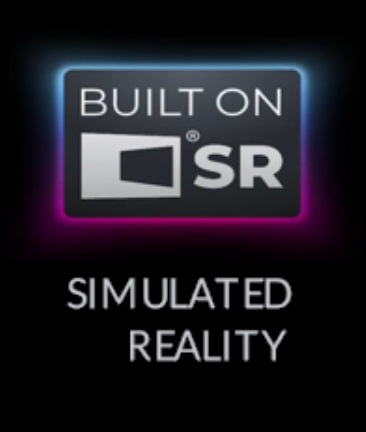
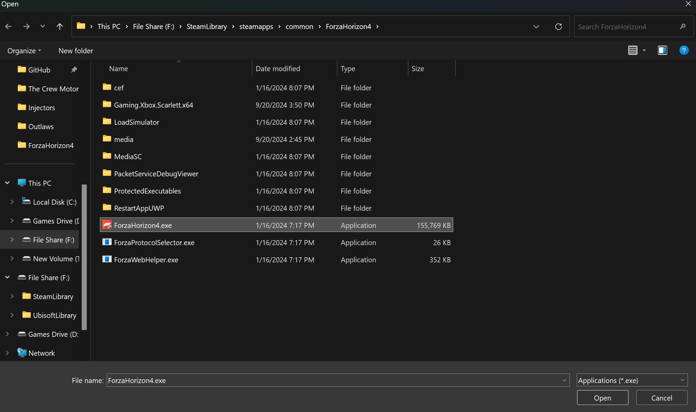
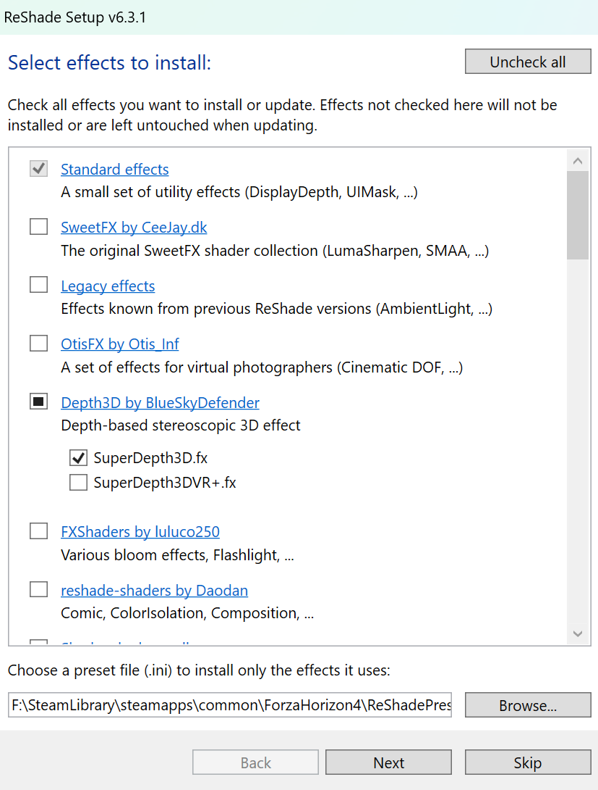
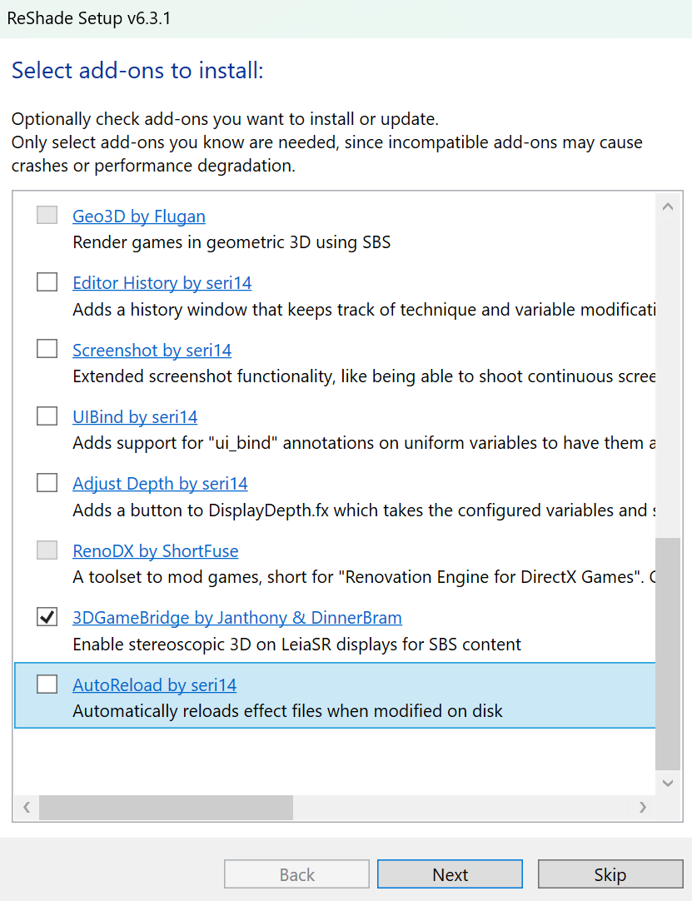
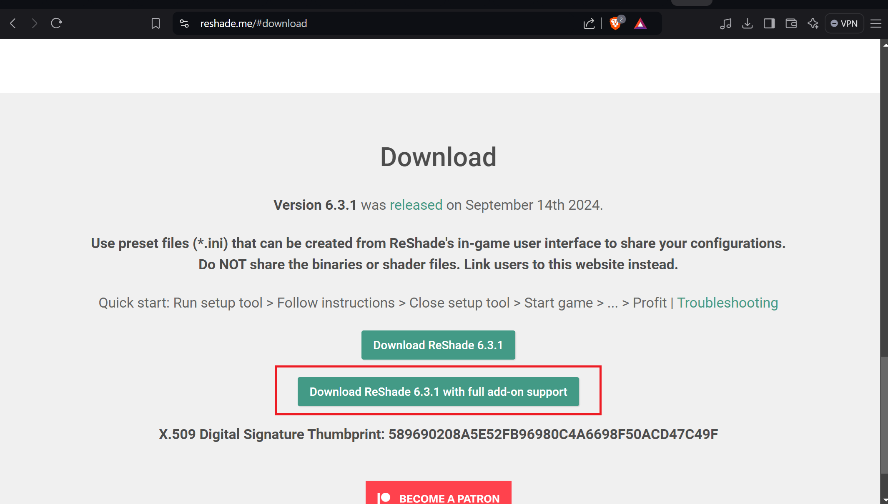
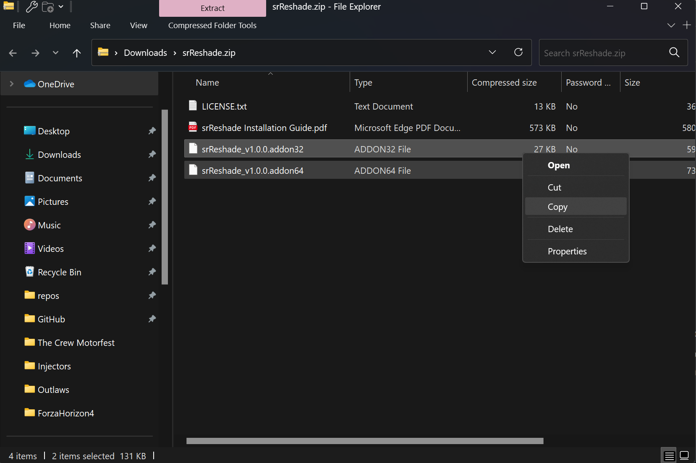
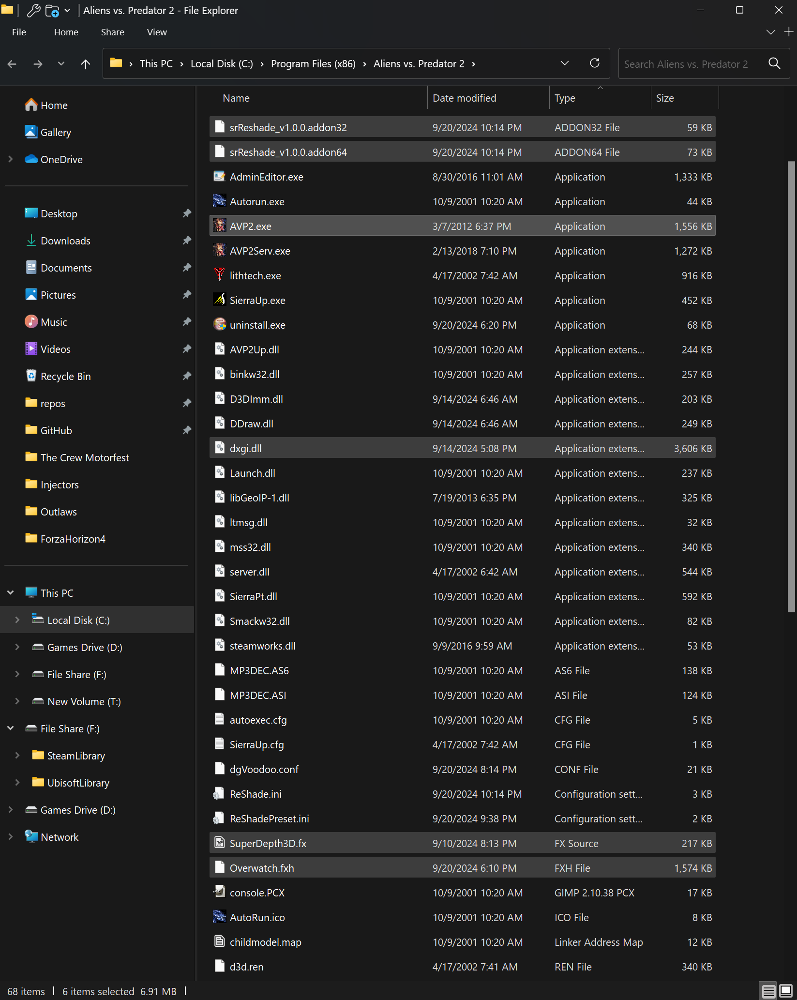

Simulated Reality Displays
Once known as Dimenco then was bought out by Leia and they didn't go by the name LeiMenco. But, they are the back end of all the SR Tech that is used now.
Main Website: https://www.leiainc.com/
Hardware Developers Links:
- Acer Spatiallabs
- ASUS Spatial Vision
- Sony Spatial Reality
If you know more Please Tell me.
So this guide is to get SuperDepth3D working on Hardware that has this badge.

3DGameBridgeProjects

SuperDepth3D for Simulated Reality Displays.
Easy Text Guide
Lets install ReShade in the normal way.
-
Download the add-on version of ReShade.

-
Install ReShade by starting the ReShade.exe

-
Select or Browse for the games own exe. In this case we are going to install it in to Forza Horizon 4.

-
Click
Open -
Select the API and next.

-
Select Depth3D Repo and Select the Shader. ☑️
SuperDepth3D.fx
-
Next...

-
Make sure you pick this add-on. ☑️
3DGameBridgeProjects
Next and Finish.
Manual Guide
-
Lets install ReShade or Inject ReShade how ever you like. But, make sure it's the Add-on Version of Reshade.

If it's already Installed Skip this.
-
Now download the latest version of 3DGameBridge.

-
Now Copy Both Add-ons or just the one you need based on the game's Arc.

-
Now Paste it where ever the games Executable is or where the ReShade's
.dllis installed.
Please start the game and see if it works.
Notes
When you start the game you may need to set your primary monitor to the Simulated Reality Display or the game may not select the correct screen for this to work. It may result with a black screen if you don't do this step.

Also make sure the game is Native Rez of that 3D Display.

If the resolution is too small then it will look something like this.